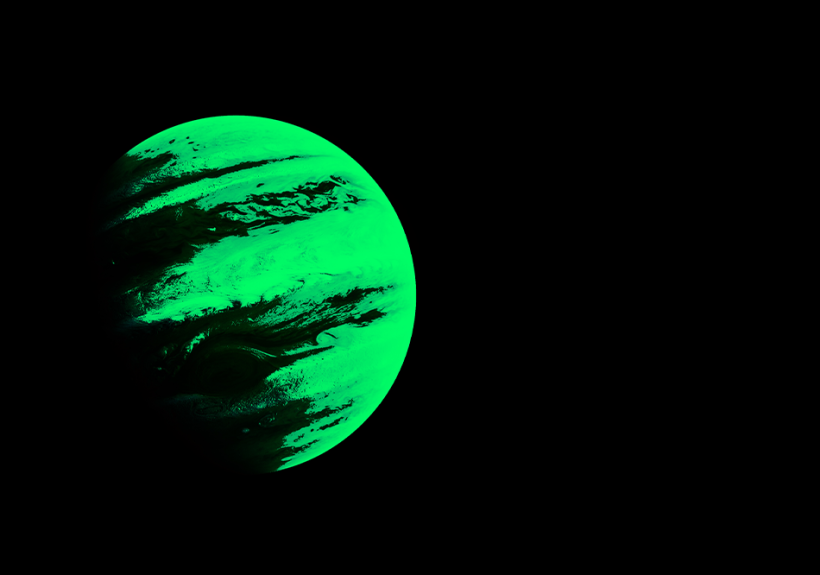
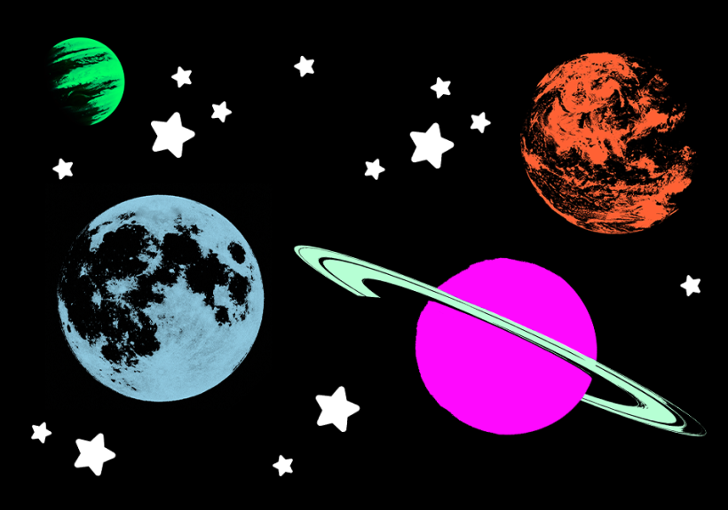
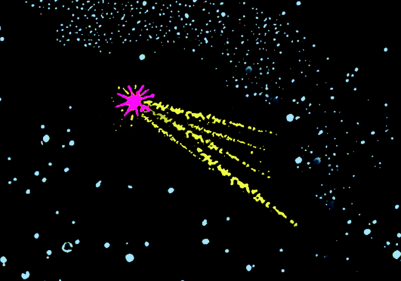

HORÓSCOPO
TESTES
SOCIEDADE
ENTRETENIMENTO
MODA
BELEZA
COMPORTAMENTO
COMPORTAMENTO
THE DRIVER ERA NA CAPRICHO
Entrevistamos os irmãos Ross Rocky Lynch, que fizeram segundo show no Brasil, no Lollapalooza.
MÍSTICA *************************************************************************************************************************

Lua e Plutão podem mudar seus sentimentos essa semana ❤️
A previsão dos signos 1 a 7 de abril de 2024 já está entre nós

Horóscopo do Dia: A previsão dos signos para essa quinta (04/04)
É melhor já se preparar para a tensão da Lua com Júpiter e Urano, viu?

Leia a previsão completa para seu signo em abril
O mês começa com Mercúrio retrógrado no Signo de Áries, hein 👀